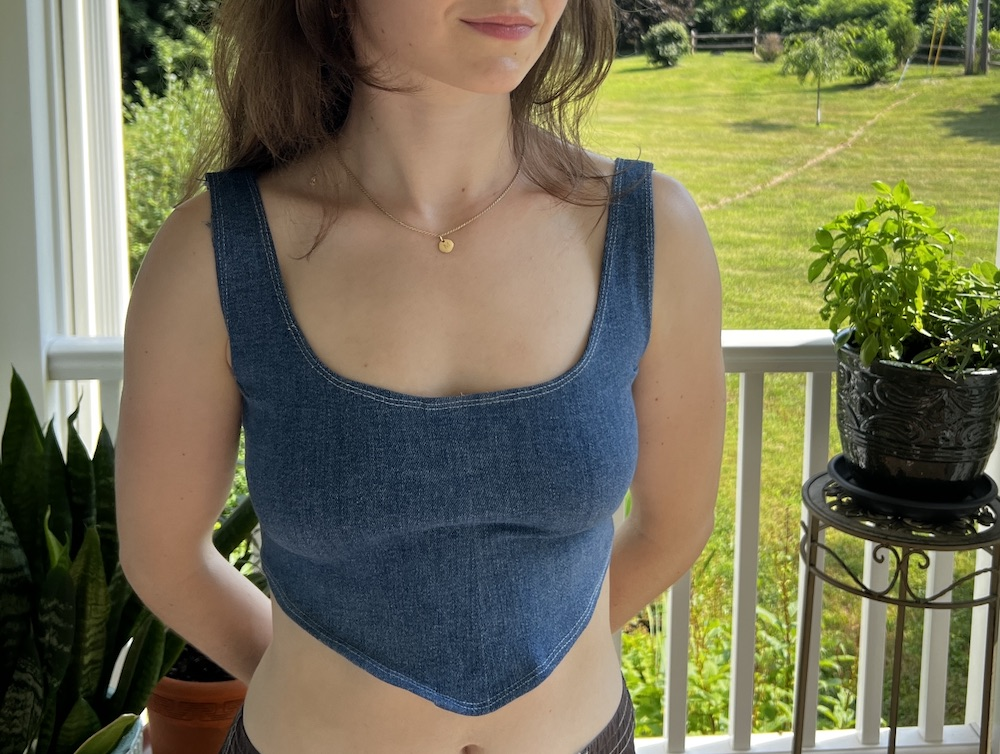
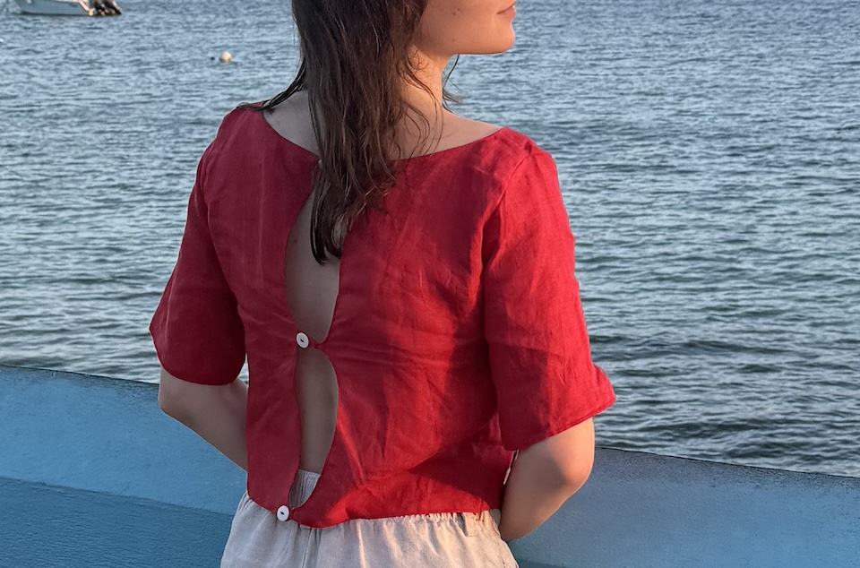

Coming to NYFW in 2050
Pieces designed, altered, or built with the same eye that directs my research and process work, turning thoughtful material sourcing, design, and finishing into a product that actually holds up.

Prom Dress
I made my senior year prom dress from scratch, starting with fabrics I loved: a layered A-line skirt with delicate lace. I drafted the bodice myself, shaping it to flatter my neckline, and pieced it together into a simple top.

Upcycled Denim Top
My favorite pair of jeans ripped an irreparable hole; I was devastated, but realized there were more options than discarding. I used a top that I already owned as a basis for the pattern, deconstructed my jeans, pieced together this top, and even used the fly as the zipper!

Navy & White Striped Shorts
Designed as a tribute to the time I spent on Nantucket growing up. I followed a YouTube tutorial for pleated shorts, picked the fabric, and adjusted the pattern to fit. I chose mediumweight linen for its structure and breathability, and because I wanted to keep the materials natural.

Red Linen Shirt
As someone who's struggled to find age-appropriate summer clothes that actually cover my shoulders, I decided to take matters into my own hands and drafted this prototype in red lightweight linen.